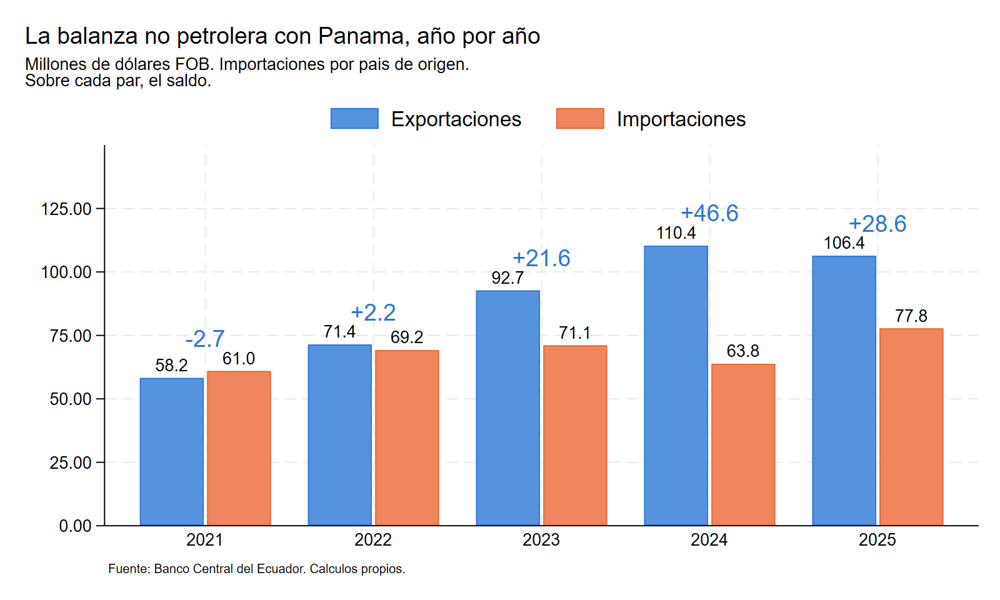

Acuerdo de Alcance Parcial Ecuador – Panamá
Qué mide el registro bilateral y sobre qué puede operar un Acuerdo de Alcance Parcial
Mario Saeteros Pérez · septiembre de 2026
El análisis se hizo a propósito de la firma de los Términos de Referencia del Acuerdo de Alcance Parcial entre los dos países, el 4 de septiembre de 2026. Cubre el período 2021–2025 con el registro del Banco Central del Ecuador y usa el registro del Instituto Nacional de Estadística y Censo de Panamá como verificación externa. Todo lo que aparece en el informe se calcula con el código y la base que están en esta página.
El punto de partida es una distinción que la discusión pública suele pasar por alto. Panamá aparece como un socio grande porque concentra el tránsito de hidrocarburos y porque buena parte de lo que llega desde allá no se produce allá. Separando el petróleo y separando el país de origen del país de procedencia, lo que queda es una relación comercial mucho más pequeña, pero superavitaria, diversificada y creciente.
Catorce secciones con la metodología declarada: conciliación con las cifras públicas, la brecha entre origen y procedencia por sector y por producto, el registro panameño como verificación externa, composición y concentración, márgenes y supervivencia, y una nota sobre por qué el índice de comercio intraindustrial no mide aquí lo que dice medir.
Descargar el informe (PDF)
Se necesita Stata 17 o superior. Hay una sola línea que editar, la ruta en
do/master.do:
global path "ruta/donde/quedo/el/repositorio"Con eso, corriendo master.do completo el programa reconstruye las bases de
trabajo desde el Excel y regenera las cinco salidas y los once gráficos. El
módulo 00_prepara_bases.do corre cinco controles de integridad sobre la
base y se detiene si alguno falla.
El análisis mantiene separadas las importaciones por país de origen y por país de procedencia en todos los cuadros. Una preferencia arancelaria opera sobre mercancía originaria, que es el primer universo. El segundo describe la función logística de Panamá. Las exportaciones se registran siempre por destino declarado y no admiten esa distinción, de modo que no se construye ninguna balanza que mezcle los dos criterios.